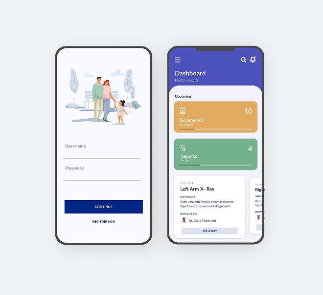
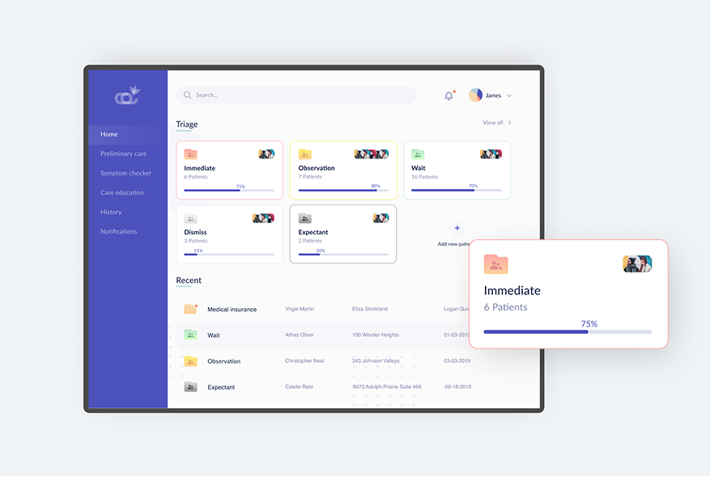
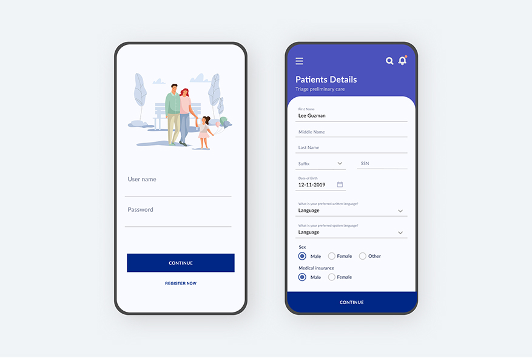

Bloom
Deloitte — Internal Pitch
A concept application that simplifies emergency triage for clinicians while keeping patients and their families informed in real time. Designed for high-stress, high-speed environments without sacrificing clinical accuracy.

Overview
Emergency departments operate under immense pressure — information is fragmented, handoffs are error-prone, and families in waiting rooms receive little or no updates about their loved ones.
Bloom is a design concept exploring how thoughtful UX can reduce cognitive load for clinicians while improving transparency for patients and families. This was a Deloitte internal pitch: making the case that good design in emergency care isn't a luxury — it's a patient safety issue.
"Designed for glanceability — because in an emergency department, a three-second read is sometimes all you get."

Design Highlights

Design Principles
Every primary screen is designed to be understood in under three seconds. One primary action per screen. Information sorted by urgency, not chronology. The most important thing is always in the same place.